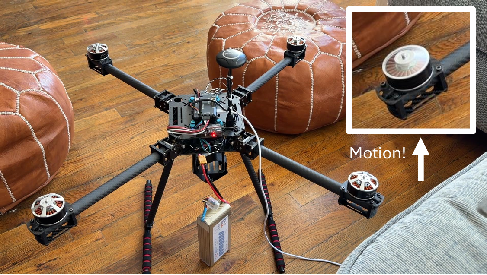
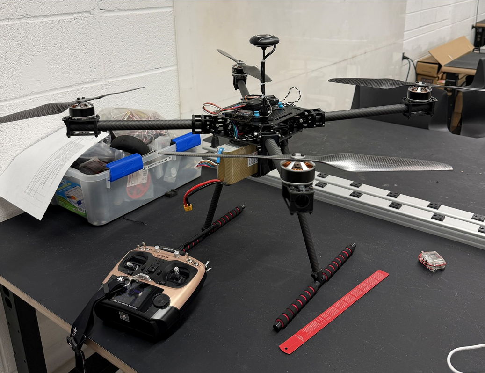

Onboard washer
4.52 kgPlaces the Ryobi washer on the aircraft and uses a siphon line from the ground. This reduces high-pressure hose mass but adds washer and battery mass directly to the drone.
Aerial robotics · Mechatronics · System integration
An ongoing aerial cleaning platform integrating a 5 kg MTOW multirotor, pressure-washing hardware, tethered fluid delivery, Raspberry Pi computing, Pixhawk flight control, camera and LiDAR sensing, and remotely controlled washer actuation.



Multirotor propulsion, Pixhawk flight control, radio control, ESCs, and vehicle power.
Ryobi washer, trigger actuation, fluid delivery, siphon line, and transfer hardware.
MAVLink telemetry, sensor logging, perception, and future autonomy.
Wall-distance estimation and facade-relative perception.
01 / System
Cleaning a building facade requires more than mounting a pressure washer beneath a drone. The platform must remain within a strict mass budget, deliver water and power safely, maintain stable flight near a wall, activate the washer remotely, and eventually estimate its position relative to the facade.
The system therefore combines flight hardware, a cleaning payload, onboard computing, communication interfaces, and environmental sensing into one tightly constrained mechatronic platform.
02 / My Role
My work focused on bringing the physical and computational subsystems together into a testable robotic platform.
Integrated the Pixhawk flight controller, Raspberry Pi, camera and LiDAR sensing, propulsion components, payload electronics, and washer actuation hardware.
Evaluated onboard and tethered pressure-washing architectures against the platform's 5 kg maximum takeoff mass.
Characterized the Ryobi washer startup demand, including the approximately 25 A surge and the limitations of the available bench supply.
Debugged camera and LiDAR alignment, reflective-surface sensing, serial communication, electrical interfaces, and integrated subsystem behavior.
03 / Payload Architectures
Two pressure-washing configurations were evaluated. One places the cordless Ryobi washer onboard the aircraft and draws water through a lighter siphon line. The second keeps the pressure washer on the ground and sends pressurized water to the aircraft through a heavier tether.
Places the Ryobi washer on the aircraft and uses a siphon line from the ground. This reduces high-pressure hose mass but adds washer and battery mass directly to the drone.
Keeps the pressure washer on the ground and uses a high-pressure tether. The aircraft remains lighter, but hose mass and tether forces increase as operating height grows.
04 / Power and Actuation
The 18 V Ryobi washer produced an approximately 25 A startup demand, exceeding the available 12.55 A bench-supply limit.
This required separating the washer's high-current power path from its low-power control interface and selecting switching hardware with sufficient current margin.
Measured washer startup behavior rather than sizing the electrical interface from nominal current alone.
Developed a relay-based control interface so the washer could be commanded without routing its high-current path through the flight computer.
Used a servo-operated mechanism to pull the washer trigger while keeping flight and cleaning commands independent.
05 / Fluid and Mass Analysis
Fluid-line selection considered pressure loss, water mass, hose mass, operating height, and the resulting load on the aircraft.
A 1/4-inch fluid line provides a lightweight option for the onboard washer architecture, while the ground-washer configuration requires substantially heavier high-pressure hose.
06 / Prototype Testing
Testing progressed from individual electrical and mechanical interfaces to propulsion bring-up and controlled indoor flight.
The first indoor lift test confirmed sufficient thrust for the assembled platform. Payload flight, outdoor operation, and autonomous cleaning remain under development.
Checked power distribution, receiver behavior, actuator interfaces, flight-controller communication, and washer control.
Verified ESC calibration, motor response, command direction, and propulsion-system behavior.
Completed an initial controlled flight to verify adequate lift before advancing to payload testing.
07 / Raspberry Pi and Sensing
A Raspberry Pi 4 provides the onboard computing layer for camera and LiDAR processing.
MAVLink communication with the Pixhawk was brought up over USB serial at 115200 baud, with heartbeat and attitude data used to verify the communication path and telemetry flow.
08 / Current Work
The project is ongoing. Current work focuses on reliable sensing, synchronized data collection, calibration, and establishing the state estimates needed for controlled operation near a building facade.
Camera and LiDAR bring-up, extrinsic alignment, reflective-surface sensing investigation, and reliable timestamped data collection.
Fuse camera, LiDAR, and flight-state data for wall-distance estimation and closed-loop positioning.
Develop recoil and tether-disturbance compensation, standoff control, and cleaning-coverage perception.
09 / Technologies